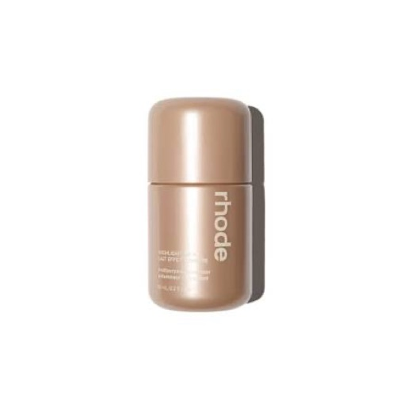
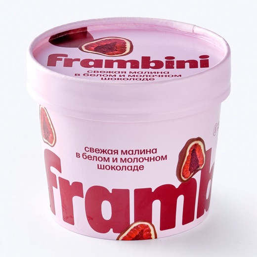
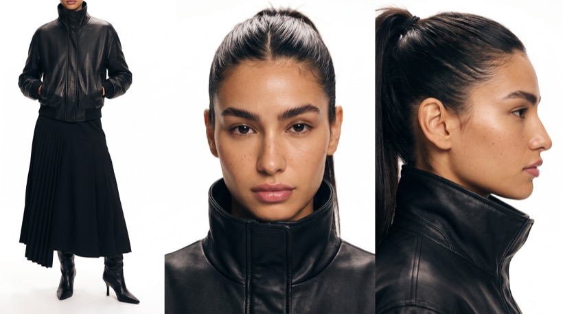

Автомат
с игрушками
Камера стоит внутри автомата, среди призов. Коготь трижды опускается за товарами: первые две попытки срываются, третья вытаскивает главный товар и роняет его в лоток. Двенадцать секунд одним кадром. Промпт универсальный — меняются только поля в квадратных скобках, всё остальное работает как есть.




Как заполнить промпт
Заполняются один раз, дальше всё работает само.
- [PRODUCT 1 / 2 / 3 — DESCRIPTION] — описание каждого товара по-английски: форма, цвет, материал, покрытие, где логотип, размер в сантиметрах. Не «ice cream», а «a small tapered paper cup in pale pink, wider at the top than at the base, sealed foil lid, bold magenta lettering, approximately 8 centimetres tall». Модель видит картинку, но описание не даёт ей переизобретать упаковку.
- [CHARACTER — DESCRIPTION] — кожа, веснушки, брови, цвет глаз, причёска, вся одежда сверху вниз. Тоже по-английски.
Три оставшихся поля — самое важное во всём промпте. Каждый срыв должен иметь видимую физическую причину, иначе получается «коготь просто не смог» — а это не смешно и не убедительно.
Главный товар должен победить за счёт конкретной детали, за которую коготь физически цепляется.
Промпт
В буфер уходит весь пакет: промпт целиком, обе библиотеки причин и промпт музыки. Копируешь один раз, дальше подставляешь нужное.
============================================================================== ПРОМПТ — АВТОМАТ С ИГРУШКАМИ, 12 СЕК, SEEDANCE 2.5 Заполни поля в квадратных скобках ============================================================================== FOUR REFERENCE IMAGES. EACH DEFINES ONE SUBJECT. @image1 = THE PRIZE. [PRODUCT 1 — DESCRIPTION: shape, colour, material, finish, logo placement, approximate height in centimetres] @image2 = THE SECOND ITEM. [PRODUCT 2 — DESCRIPTION: shape, colour, material, finish, logo placement, approximate height in centimetres] @image3 = THE THIRD ITEM. [PRODUCT 3 — DESCRIPTION: shape, colour, material, finish, logo placement, approximate height in centimetres] @image4 = THE PLAYER. [CHARACTER — DESCRIPTION: skin, freckles or marks, eyebrows, eye colour, hairstyle, then the full wardrobe from top to bottom] From this point on, THE PRIZE, THE SECOND ITEM, THE THIRD ITEM and THE PLAYER always mean exactly these four subjects. Use each reference exclusively for the identity of its own subject: recognizable shape, proportions, colors, materials, surface details, branding, logo, typography, face, hair and wardrobe. Ignore the white studio backgrounds of all four references completely. Do not reproduce their studio environments, reference lighting, shadows, compositions or camera angles. THE PRIZE, THE SECOND ITEM and THE THIRD ITEM are three DIFFERENT objects. Each appears exactly ONCE in the entire film. Never merge, swap or duplicate them. Never place branding, lettering or colour from one onto another. THE PLAYER remains the exact same recognizable person in the exact same wardrobe throughout. Do not invent additional clothing, jewellery or accessories. CREATE ONE 12-SECOND EXTREMELY PHOTOREALISTIC CINEMATIC FILM SEQUENCE. ONE CONTINUOUS SHOT. NO CUTS. The references control identity only. Everything else is controlled by this screenplay: environment, arcade cabinet, claw mechanics, prize pile, lighting, camera, acting, eyelines, timing, physics and editing rhythm. CINEMATIC WORLD Create a believable old arcade hall at night. Worn carpet, scuffed cabinet edges, dust on the glass, fingerprints, a slightly yellowed plastic frame — a real machine that has been used for years, not a clean render. MOUNT THE CAMERA INSIDE THE CLAW MACHINE CABINET. Position it low, down among the prizes, at the level of the prize pile, looking slightly upward and outward through the large front glass panel. Use a natural cinematic medium-wide perspective approximately equivalent to a 35mm spherical cinema lens. The lower third of the frame is the soft prize pile: worn plush toys, faded fabric, dulled and desaturated colours, natural compression and irregular stacking. The plush toys are deliberately washed out and colourless. The three products are the only saturated, clean, intact objects in the pile, and they separate from the background because of it. The upper portion of the frame contains the metal claw hanging on its cable, and beyond the glass, THE PLAYER standing at the machine. THE PLAYER is clearly visible THROUGH the front glass, with faint realistic reflections of the arcade neon across the surface between camera and character. PLACEMENT — all three products are visible from the first frame, spaced clearly apart so they never overlap or touch: THE THIRD ITEM rests on the near-left side of the pile, closest to camera, among the plush toys. THE PRIZE rests on the far-right side of the pile, well separated from the others, its branded face catching the cabinet light and clearly visible. THE SECOND ITEM lies in the middle ground between them, deeper in the pile, partly nestled between two soft toys, its printed face turned toward camera and readable. Each sits among the plush toys as if it has always been part of the prizes. Give each believable real-world scale, correct perspective, physical weight, natural contact with the soft toys beneath, contact shadows and reflected cabinet light. Nothing floats. Nothing looks composited. Nothing resembles a pasted studio photograph. LIGHTING AND FILM LANGUAGE Night interior. The cabinet's own internal fluorescent strip lights the prize pile from above with a slightly cold practical glow. CHARACTER SEPARATION — IMPORTANT: The hall behind THE PLAYER is dark. Without deliberate separation the character will collapse into an unreadable silhouette. Warm arcade neon and cabinet signage behind and to one side must cut a clear rim of light along the hair and the edge of the shoulders, lifting the character off the dark background. Soft spill from the cabinet's own front glass falls on the face from below and in front, keeping the eyes and expression fully readable at all times. Clothing holds visible specular highlights along its folds, so the material reads as a real fabric rather than as a flat shape. The face is never lost in shadow. The interior of the cabinet is brighter than the hall behind the character. The glass carries physically present reflections, dust and light streaks at all times. Use motivated practical light only. The entire video feels like twelve seconds physically cut from a beautifully photographed theatrical feature film. Use the visual language of premium American 35mm cinema: warm photochemical color response, natural skin tones, creamy highlights, restrained saturation, deep neutral blacks with preserved shadow information, smooth photochemical highlight roll-off, fine irregular organic 35mm film grain, subtle halation around the neon and fluorescent sources, gentle optical bloom, slightly softened micro-contrast, natural vintage spherical-lens rendering, realistic optical depth, natural focus falloff, restrained depth of field, and natural theatrical 24fps motion blur. The image must feel genuinely photographed rather than digitally filtered. No glossy commercial aesthetic. No artificial HDR. No sterile digital sharpness. No plastic skin. ACTING DIRECTION — HIGHEST PRIORITY THE PLAYER behaves like a real human being, not an AI avatar executing instructions. All acting is restrained, psychologically motivated and physically believable. THOUGHT PRECEDES ACTION. CAUSE PRECEDES EFFECT. The natural reaction rhythm is: EYES REACT FIRST → TINY PROCESSING PAUSE → HEAD FOLLOWS → TINY PAUSE → BODY FOLLOWS. CRITICAL ESCALATION RULE: The reaction must ESCALATE across the three claw attempts and never peak early. ATTEMPT 1 — THE THIRD ITEM slips — ordinary mild disappointment. ATTEMPT 2 — THE SECOND ITEM escapes the claw — a contained flicker of frustration, a small breath, then the character simply continues. ATTEMPT 3 — THE PRIZE is lifted — this is the ONLY moment the character is genuinely affected. Never combine multiple emotional beats into one rushed gesture. Every important action has a readable beginning, middle and completion. Allow tiny human pauses. Natural breathing. Natural acceleration and deceleration. Natural body inertia. Correct human anatomy and joint articulation. Emotion appears through eyeline, breathing, tiny facial changes, hesitation and posture rather than exaggerated expressions. No twitching. No sudden body jerks. No robotic transitions. No exaggerated comedy acting. 0.0–0.8s — QUIET OPENING Begin inside the cabinet. The camera is ABSOLUTELY LOCKED OFF. The claw hangs still at the top of the frame. All three products rest in the pile in their established positions. Beyond the glass, THE PLAYER stands at the machine, hands on the controls, eyes down on the prizes. Hold the quiet observational composition. No camera movement. 0.8–2.6s — ATTEMPT ONE — THE THIRD ITEM The character's hand moves on the joystick outside the glass. The claw travels sideways across the top of the frame, decelerates, and stops directly above THE THIRD ITEM. The claw descends with realistic cable slack and slight pendulum sway. The metal fingers close around it. The claw rises. THE THIRD ITEM lifts clear of the pile, hanging slightly tilted, its surface responding visibly to the pressure of the metal. Show clear physical causality for the failure: [FAILURE REASON A — the physical chain that makes the claw lose this specific object] THE THIRD ITEM falls back into the pile, lands with a soft believable impact, shifts a short distance and settles among the plush toys. Its packaging is undamaged. Its printed face stays readable. It remains physically present in the pile for the remainder of the film. The character reacts with ordinary mild disappointment: a small exhale, a tiny shift of weight, eyes staying on the machine. No frustration. No large gesture. 2.6–4.6s — ATTEMPT TWO — THE SECOND ITEM The camera remains completely locked off. The claw travels sideways again, stops above THE SECOND ITEM, and descends into that part of the pile. The metal fingers close around it. The claw begins to rise. Show clear physical causality for the failure: [FAILURE REASON B — the physical chain that makes the claw lose this specific object] THE SECOND ITEM leaves the grip, travels a short distance across the pile, contacts a plush toy and comes to rest among the soft toys, still clearly visible. Its packaging is undamaged and remains closed. It remains physically present in the pile for the remainder of the film. The character's EYES react first. Tiny processing pause. The head tilts very slightly. A small contained breath. One tiny movement of the jaw. The character glances briefly to one side, as if checking whether anyone else is in the arcade, then looks back. The reaction stays small and contained. 4.6–8.8s — ATTEMPT THREE — THE PRIZE The character settles their grip on the joystick. Tiny decision beat. The claw travels sideways one final time and stops directly above THE PRIZE. The claw descends. FOR THE FIRST TIME, THE CAMERA BEGINS TO MOVE. Perform ONE slow, deliberate cinematic PUSH-IN from the original locked position toward THE PRIZE and the descending claw. The movement feels like a real controlled cinema-camera push, not a digital zoom. The metal fingers open and lower around it. Show clear physical causality for the success: [SUCCESS REASON — the specific physical feature that finally gives the claw a real hold] This is why the third attempt works and the first two did not. The hold must be visible. As THE PRIZE leaves the pile, temporal cadence gradually decelerates into elegant MICRO SLOW-MOTION. It rises above the prize pile, rotating gently on the claw. The camera rises with it in one continuous motion, keeping the branded face visible and readable in an upright reading orientation. Cabinet light glides across the packaging surface because the camera position changes. HOLD this brief suspended cinematic beat. Show tactile cinematic detail: metal against the real material of the packaging, its actual surface finish and print quality, fine dust in the light, the soft pile below with THE THIRD ITEM and THE SECOND ITEM still lying in it, the character's face beyond the glass now in soft shallow focus but still clearly lit. THIS MOMENT MUST BREATHE. The character's reaction finally arrives, and only now: EYES WIDEN SLIGHTLY → TINY PAUSE → THE HEAD LIFTS TO FOLLOW IT → BREATH HELD. Restrained. No open mouth. No theatrical shock. THE PRIZE never changes identity, branding, colour, proportions or design. 8.8–10.4s — THE DROP The micro slow-motion releases back into normal theatrical motion. The claw travels toward the prize chute. The camera follows in one smooth continuous movement. The metal fingers open. THE PRIZE falls, tumbling once with believable weight and inertia, and lands inside the prize chute. It settles naturally according to real gravity and its own geometry. It never lands standing in an artificial display pose. Nothing separates from it on impact. It is undamaged. 10.4–12.0s — THE RETRIEVAL The camera settles low near the chute opening. The character's hand enters the chute from outside. The reaching motion is calm, immediate and realistic. The fingertips make first physical contact with THE PRIZE. The fingers close around it and establish a COMPLETE SECURE GRIP. Show natural skin deformation, the real surface texture of the packaging, and the material responding to pressure. The hand lifts THE PRIZE out of the chute and out of the top of frame. END the film exactly on this pickup, while the character is still lifting it. Do not show them walking away. Do not resolve the moment. Do not cut to a product packshot. FINAL PRIORITIES PRIORITY 1 — CHARACTER IDENTITY. Preserve the same recognizable person and the same wardrobe throughout, with the face always separated from the dark background and clearly readable. PRIORITY 2 — THREE SEPARATE PRODUCT IDENTITIES. THE PRIZE, THE SECOND ITEM and THE THIRD ITEM are three different objects, each appearing exactly once, each matching its own reference exactly. Never merge, swap, duplicate or cross-brand them. PRIORITY 3 — THE FIXED ORDER. Exactly three claw attempts: THE THIRD ITEM fails, THE SECOND ITEM fails, THE PRIZE succeeds. The camera angle is identical for the first two attempts. PRIORITY 4 — PHYSICAL REASONS. Each outcome has a visible physical cause, stated in the beat descriptions above. PRIORITY 5 — PERSISTENCE. THE THIRD ITEM and THE SECOND ITEM remain visibly lying in the prize pile for the rest of the film after they fall. They never vanish, never return to their original positions, and are never picked up again. PRIORITY 6 — ESCALATING PERFORMANCE. Mild disappointment, then contained frustration, then genuine restrained reaction. The reaction must never peak before the third attempt. PRIORITY 7 — CLAW PHYSICS. Cable slack, pendulum sway, realistic grip pressure, believable failures on the first two attempts, believable success on the third. PRIORITY 8 — ONE CAMERA EVENT. The camera is completely locked off from 0.0 to 4.6 seconds, then performs ONE single continuous move for the remainder of the film. PRIORITY 9 — CONTINUOUS SINGLE SHOT. No cuts, no transitions, no scene changes. PRIORITY 10 — PACKAGING INTEGRITY. No product is crushed, torn, opened or damaged at any point. MANDATORY STORY CONTINUITY: all three products visible in the prize pile, spaced apart → claw descends onto THE THIRD ITEM → grips it → the physical failure occurs → it falls back into the pile → mild disappointment → claw descends onto THE SECOND ITEM → the physical failure occurs → it escapes and lands among the toys → contained frustration → claw descends a third time onto THE PRIZE → the physical hold locks → camera begins its only movement → micro slow-motion → THE PRIZE rises above the pile with the other two still lying below → the character finally reacts → normal speed returns → claw travels to the chute → THE PRIZE drops and settles → hand reaches into the chute → first contact → complete grip → THE PRIZE lifted out of frame → end. FINAL IMAGE AND MOTION QUALITY: Extremely photorealistic. High-budget theatrical cinematic photography. Authentic 35mm film character. Natural human acting. Natural facial performance. Natural eye movement. Realistic anatomy. Correct hands and fingers. Realistic body inertia. Physically believable claw mechanics. Physically believable packaging materials. Natural theatrical motion blur. Stable character identity. Stable product identities. Stable exposure. Consistent organic film grain. No temporal flicker. No sudden camera jumps. No robotic movement. No synthetic AI-video appearance. 4K, Ultra HD, rich details, sharp clarity, cinematic texture, natural colors, stable picture. NEGATIVE / DO NOT: the character's face falling into shadow or reading as a flat silhouette; any product appearing twice or duplicated in the pile; branding, colour or lettering from one product appearing on another; the products changing size, colour, logo or proportions between attempts; the claw succeeding on the first or second attempt; the failed items disappearing after they fall; the failed items returning to their original positions; any packaging crushed, torn or opened; the character reacting strongly before the third attempt; camera movement before 4.6 seconds; any cut or transition; a static product packshot ending; on-screen text, captions or logos; exaggerated comedy expressions. ============================================================================== БИБЛИОТЕКА ПРИЧИН СРЫВА — выбери под форму своего товара Вставляется в [FAILURE REASON A] и [FAILURE REASON B] ============================================================================== — Конус или стакан, сужается книзу THE CONTAINER IS TAPERED, WIDER AT THE TOP THAN AT THE BASE → THE METAL FINGERS SLIDE DOWNWARD ALONG THE SLOPING WALL → THE OBJECT IS TOO LIGHT TO HOLD THE FINGERS CLOSED → IT SLIPS FREE — Маленький и глянцевый THE OBJECT IS SMALL AND ITS SURFACE IS SMOOTH AND GLOSSY → THE FINGERS CANNOT FIND PURCHASE → PRESSURE BUILDS → IT SQUIRTS OUT SIDEWAYS FROM BETWEEN THE METAL FINGERS — Мягкая пачка или пакет THE PACKAGING IS SOFT AND FLEXIBLE → IT FOLDS AND COMPRESSES UNDER THE METAL FINGERS INSTEAD OF HOLDING ITS SHAPE → THE CONTENTS SHIFT INSIDE → IT SLITHERS OUT OF THE GRIP — Тяжёлый THE OBJECT IS DENSE AND HEAVY FOR ITS SIZE → THE CLAW MOTOR STRAINS AUDIBLY → THE CABLE TENSIONS → THE WEAK SPRING IN THE FINGERS GIVES WAY → IT DROPS BACK — Цилиндр или банка THE OBJECT IS A SMOOTH CYLINDER → THE FINGERS FIND NO FLAT FACE TO PRESS AGAINST → IT ROTATES INSIDE THE GRIP → IT ROLLS OUT AND FALLS BACK — Высокий и узкий THE OBJECT IS TALL AND NARROW → THE CLAW GRIPS TOO HIGH ABOVE ITS CENTRE OF MASS → IT TIPS SIDEWAYS UNDER ITS OWN WEIGHT → IT PIVOTS OUT OF THE FINGERS ============================================================================== БИБЛИОТЕКА ПРИЧИН УСПЕХА — за что коготь зацепится Вставляется в [SUCCESS REASON] ============================================================================== — Выступ, рант, ступенька ONE FINGER CATCHES UNDER THE RAISED EDGE → THE HARD STEP GIVES THE METAL A REAL HOOK → THE GRIP LOCKS — Талия в силуэте THE FINGERS SETTLE INTO THE NARROW WAIST OF THE SILHOUETTE → THE SHAPE ITSELF PREVENTS THEM FROM SLIDING → THE GRIP LOCKS — Текстурированная поверхность THE SURFACE IS MATTE AND TEXTURED → THE METAL FINDS REAL FRICTION → THE FINGERS HOLD WITHOUT SLIPPING — Плоские грани THE FINGERS CLOSE FLAT AGAINST TWO PARALLEL FACES → THE PRESSURE DISTRIBUTES EVENLY → THE GRIP LOCKS ============================================================================== МУЗЫКА — SUNO, 40–60 СЕК, 92 BPM ============================================================================== Style: music box instrumental, celesta and glockenspiel melody, soft plucked pizzicato strings, gentle toy piano, childlike and slightly melancholy, sparse and delicate at first, slowly building with warm low strings into a sincere emotional swell, cinematic score, analog warmth, no vocals NEGATIVE: vocals, lyrics, drums, trap hi-hats, EDM, distorted guitar, heavy bass
На что смотреть
Suno не сделает 12 секунд с точными акцентами — генерируй 40–60 секунд и подрезай. Темп 92 BPM. Нарастание ставь на 4.6 — начало третьей попытки. Кульминацию на 8.8, когда товар поднимается над кучей. После 10.4 убирай почти в тишину, чтобы финальный захват рукой прозвучал сухо.
 ▶
▶
Хочешь снимать такое на заказ?
Универсальный каркас под любой товар — это то, что продаётся не разово, а как услуга: один промпт закрывает целую линейку продуктов клиента. На обучении даю систему целиком: от первой генерации до портфолио и первых заказов. Приходи на экскурсию — покажу платформу изнутри и работы учеников, разберу твою ситуацию. Ничего продавать не буду.
Записаться на экскурсию → Бесплатно · созвон 30–40 минут · места ограничены